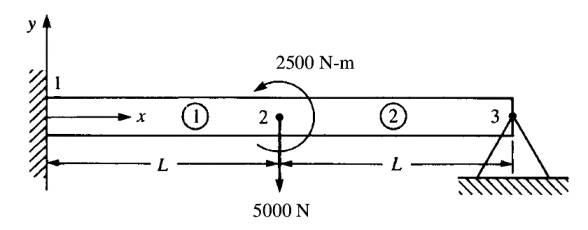
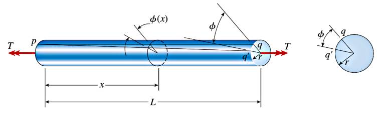
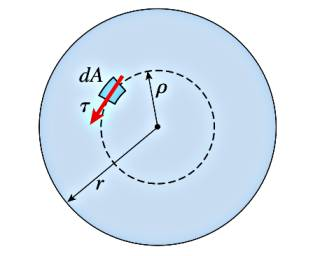

Materyel Mekaniği - 7
Burulma (Torsion)
Eksenel ve eksene dik yüklemelerden biraz daha çetrefil analiz gerektiren bir yük uygulama şekli, bir çubuğun büküldüğü zaman ortaya çıkan burulma durumudur. Burulma bir öğe momentlerle, ya da torklarla dönüşsel olarak yüklendiği zaman ortaya çıkar [1, sf. 224].

Mesela üstteki ilk resimde bir vidanın döndürülmesi görülüyor, bu durumda bir el bir $T$ torku uygular. Bir arabanın tekerlek aksı, şaftı ya da gemilerin pervanesine (propeller) dönüş ileten aks aynı davranışı sergiler. Altta üçüncü resimde görülen tork ilk nokta için $T_1 = P_1 d_1$ ile, ikincisi $T_2 = P_2 d_2$ ile hesaplanabilir.

Burulmanın materyel seviyesindeki deforme edici etkilerine bakalım. $L$ uzunluğunda bir birörnek (üniform) çubuk $T$ torku ile buruluyor. Bu burulma baş noktasında daha az sağa gittikçe daha fazla değişime sebep olacaktır, en sonda, görüldüğü gibi, mesela bir $q$ noktası, $q'$ noktasına gelebilir.

Eğer daha ufak bir parçaya odaklanırsak, bu parçanın en uç sağ noktasındaki bir $b$ noktasının $b'$'ye geldiğini hayal edebiliriz, peki burulma öncesi $ab$ çizgisi ile sonrası ortaya çıkan $ab'$ çizgisi arasındaki $\gamma_{max}$ açısını nasıl hesaplarız?

Elimizde bir daire parçası $bb'$ var, bu daire parçası diğer çizgiler $ab$ ve $ab'$ ile bir üçgen oluşturuyor. Küçük açılar sözkonusu ise bu durumda açı hesabının
$$ \gamma_{max} = \frac{bb'}{ab} $$
ile yapılabileceğini biliyoruz [2]. $ab$ ile $\mathrm{d} x$ aynı uzunluktadır, ayrıca dairenin $bb'$ parçasının $r \mathrm{d} \phi$ ile hesaplanabileceğini de biliyoruz, bunları üstteki formülde yerine koyarsak,
$$ \gamma_{max} = \frac{r \mathrm{d} \phi}{\mathrm{d} x} $$
Bu denklem çubuğun en üst tabakasındaki kaykılma gerinimi $\gamma_{max}$ ile burulma açısı arasında bir ilişki kurar.
[devam edecek]
Kaynaklar
[1] Gere, Mechanics of Materials
[2] Bayramlı, Normal Diferansiyel Denklemler, Trigonometri
Yukarı